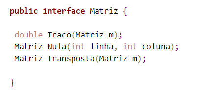
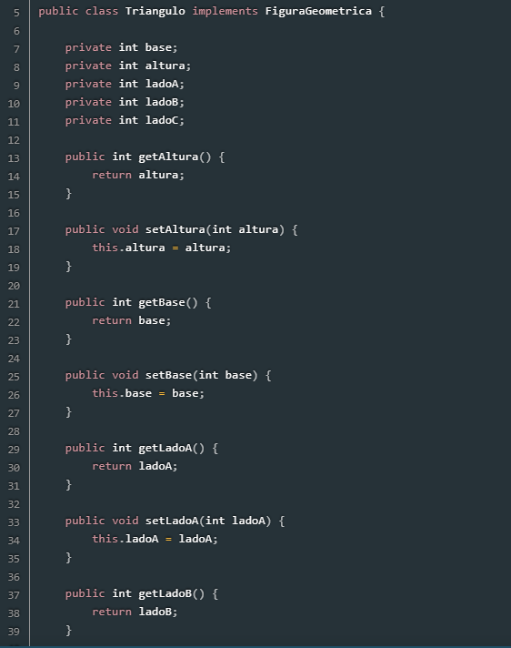
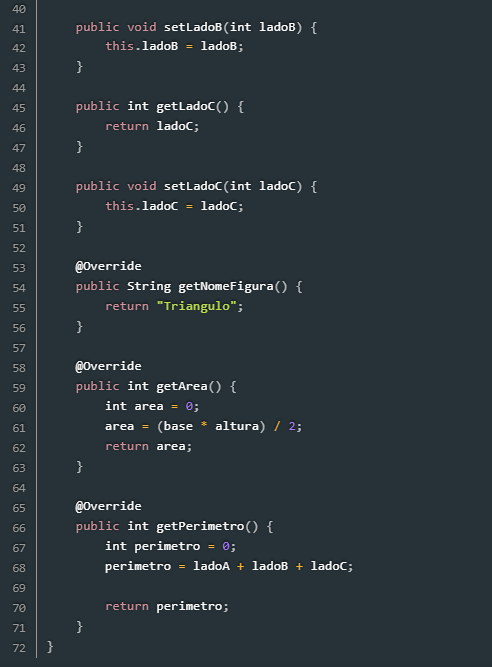
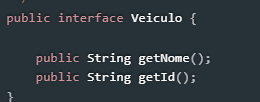
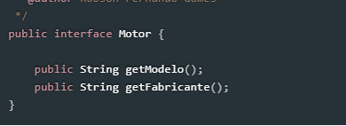
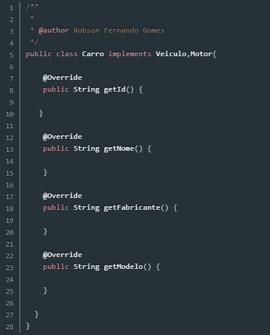

O que são interface em Java?
A interface é um recurso utilizado em Java para “obrigar” a um determinado grupo de classes a ter métodos ou propriedades em comum para existir em um determinado contexto, contudo os métodos podem ser implementados em cada classe de uma maneira diferente. Pode-se dizer, a grosso modo, que uma interface é um contrato que quando assumido por uma classe deve ser implementado.
No rigor do termo, uma interface em Java nada mais é que uma classe abstrata composta somente por métodos abstratos. E como tal, obviamente não pode ser instanciada.
Ou seja, ela só contém as declarações dos métodos e constantes, nenhuma implementação, só o 'molde'.

Utilizando interface em Java
Dentro das interfaces existem somente assinaturas de métodos e propriedades, cabendo à classe que a utilizará realizar a implementação das assinaturas, dando comportamentos práticos aos métodos.
Abaixo é possível ver um exemplo de uma interface chamada Figura Geométrica com três assinaturas de métodos que virão a ser implementados pelas classes referentes às figuras geométricas.
Para realizar a chamada/referência a uma interface por uma determinada classe, é necessário adicionar a palavra-chave implements ao final da assinatura da classe que irá implementar a interface escolhida.

Sintaxe
public class nome_classe implements nome_interface
Abaixo é possível ver duas classes que implementam a interface FiguraGeometrica, chamada Quadrado e Triângulo:
Onde:
• nome_classe – Nome da classe a ser implementada.
• nome_Interface – Nome da interface a se implementada pela classe


Herança
A herança limita uma classe a herdar somente uma classe pai por vez, é possível que uma classe implemente várias interfaces ao mesmo tempo.
 